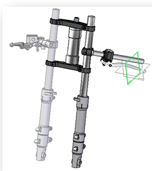

Insert Assembly Copy command
The Insert Assembly Copy (IAC) command takes as input an external assembly file and places its top-level structure as an assembly feature in the active assembly document. The assembly copy can be associative to the original assembly or can be frozen so that changes are not incorporated.

An associative assembly feature is added to the child assembly, such that any changes to the parent assembly propagate to the child assembly on update.
You can use the Insert Assembly Copy for:
-
Assembly structure reuse (Pipes, Frames, Tubes)
-
Bill of Materials with identical components of the parent assembly.
-
Creation and definition of Assembly Process States.
-
Associative mirror. which creates inserted assembly copies.
-
Publish Multi-Body part files – uses this function to generate an associative assembly of the design bodies.
The following items can be included in an IAC:
-
Subassembly occurrences
-
Part occurrences
-
Adjustable parts
-
Adjustable subassemblies
-
Assembly driven part features
-
Assembly features (On/Off option)
-
Weld beads.
Note:For these to appear the child assembly has to be a weldment assembly and the assembly features option has to be set to On.
-
Embedded frame and pipe bodies
-
Tubes
-
Occurrence patterns
-
Fastener systems
-
Fastener system pattern
-
Insert Assembly Copy feature in parent assembly
For Solid Edge data management users who selected the option Automatically name files via Document Number and Revision, the system displays a dialog box where you can assign common properties, such as document number and revision number, as explained in Create documents with unique properties.
Adjustable parts and subassemblies are placed as adjusted in the parent assembly.
By using the More→Freeze button on PathFinder shortcut menu for the insert assembly copy will not update when the parent changes. This can be used to reflect process states when using the assembly. A component can unfreeze and all the changes to the parent are reflected in the insert assembly component.